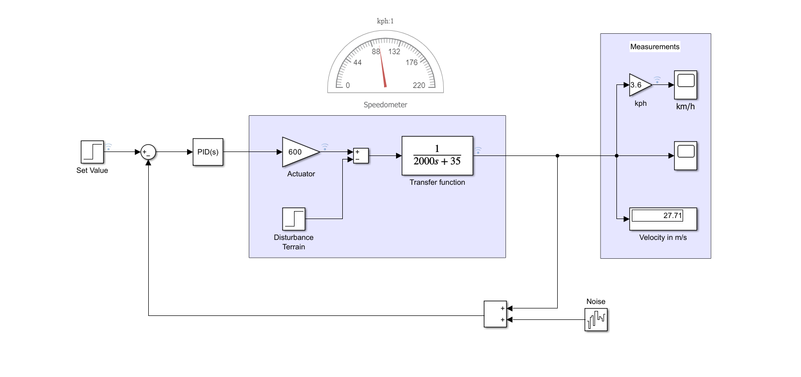
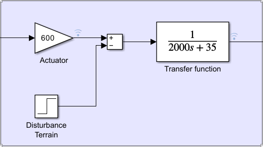
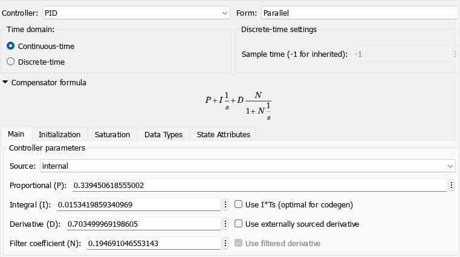
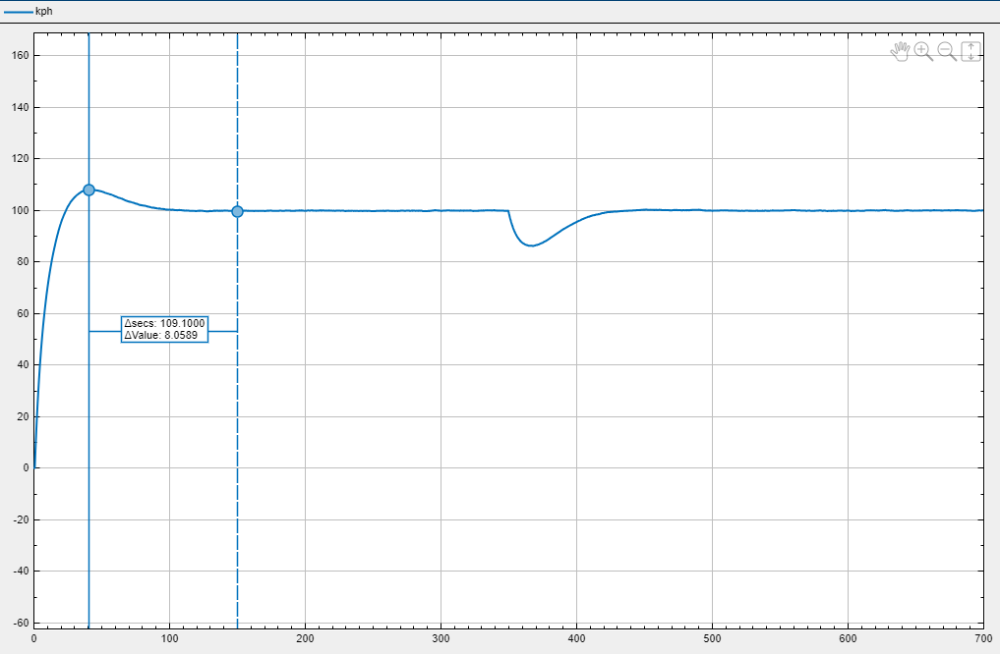
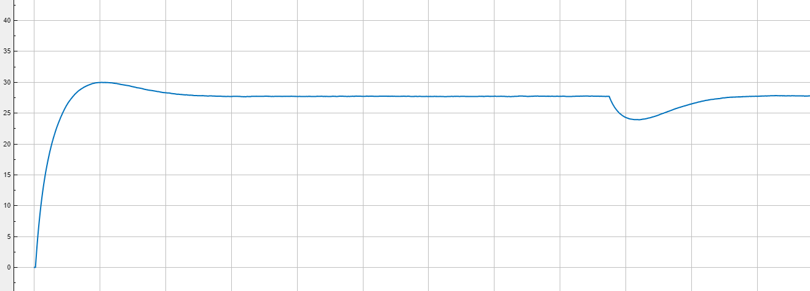
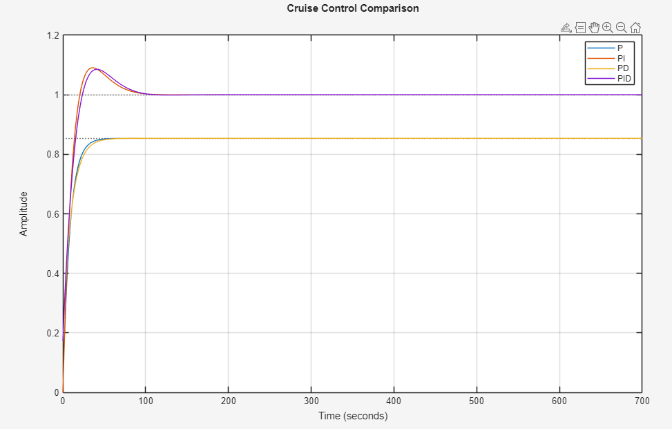

A generic, vehicle-agnostic study of closed-loop longitudinal speed control — transfer-function modeling, PID tuning, disturbance rejection, and a head-to-head benchmark of P, PI, PD and PID controllers.
Cruise control is a closed-loop longitudinal controller that automatically modulates throttle effort to hold a driver-selected vehicle speed.
It reduces driver fatigue on highways, improves fuel economy through smoother torque demand and forms the foundation for ADAS features such as adaptive cruise.
Feedback continuously corrects the throttle command based on the measured speed error, rejecting road slope, payload and aerodynamic disturbances.
A passenger vehicle must hold a target speed despite continuously changing road conditions. Without feedback, even a small uphill grade or load change produces significant steady-state speed error and a degraded driving experience.
Apply Newton's second law to longitudinal motion with damping for drag and rolling losses.
Take the Laplace transform to derive a first-order plant G(s) = 1/(Ms + B).
Construct P, PI, PD and PID compensators in parallel form against the same plant.
Build the closed-loop Simulink model with reference, error, actuator, plant and feedback.
Apply a step terrain disturbance and additive sensor noise on feedback.
Measure rise time, overshoot, settling time, steady-state error and rejection.
The controller methodology is fully generic. Specific numerical values for M and B are used purely as example test cases during simulation and do not target any particular vehicle.






| Controller | Rise Time (s) | Overshoot (%) | Settling Time (s) | SSE |
|---|---|---|---|---|
| P | 18.38 | 0 | 32.74 | 0.146 |
| PI | 14.59 | 9.05 | 74.40 | ✓ 0 |
| PD | 21.02 | 0 | 37.33 | 0.146 |
| PID | 17.53 | 8.54 | 79.40 | ✓ 0 |
The plant is type-0 (no free integrator). Pure proportional or PD action cannot generate the constant force required to fully cancel a constant disturbance, so a residual speed offset remains.
The integral term accumulates error over time and drives it to zero, producing the constant control effort needed to counter constant disturbances.
For a first-order plant the derivative term contributes little to stability and amplifies sensor noise — settling time actually worsens slightly versus PI.
PI delivers zero steady-state error, the fastest rise time, and clean disturbance rejection without unnecessary derivative noise sensitivity.
% Generic vehicle plant
M = 2000; % example mass [kg]
B = 35; % example damping [N·s/m]
s = tf('s');
G = 1/(M*s + B);
% Closed-loop controllers
Kp = 0.3395; Ki = 0.01534; Kd = 0.7035;
C_P = pid(Kp);
C_PI = pid(Kp, Ki);
C_PD = pid(Kp, 0, Kd);
C_PID = pid(Kp, Ki, Kd);
T = {feedback(C_P*G,1), feedback(C_PI*G,1), ...
feedback(C_PD*G,1), feedback(C_PID*G,1)};
step(T{:}); legend P PI PD PID
title('Cruise Control Comparison')